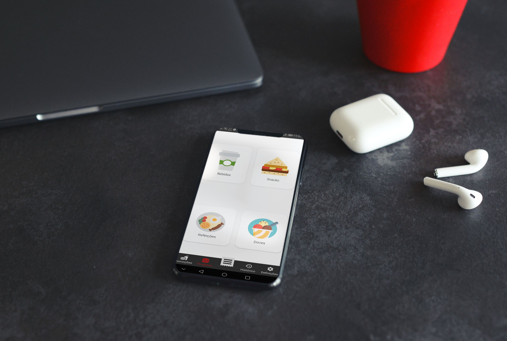
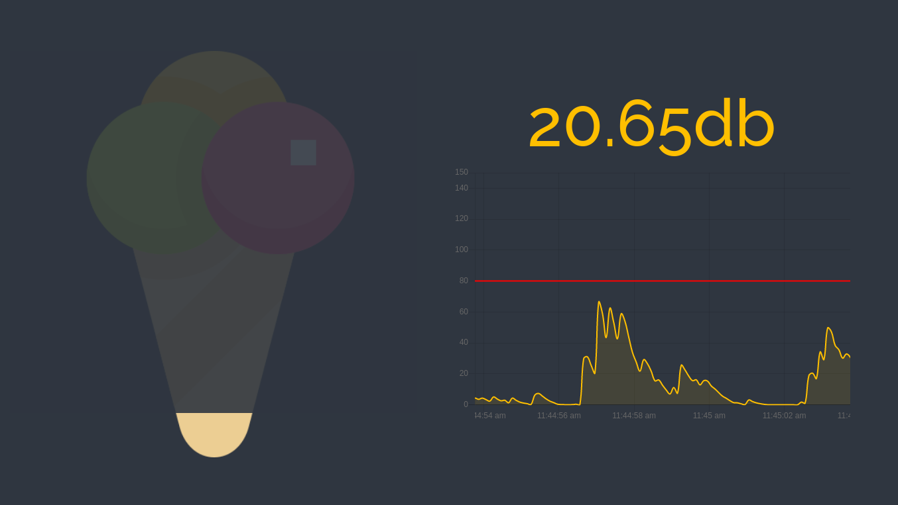
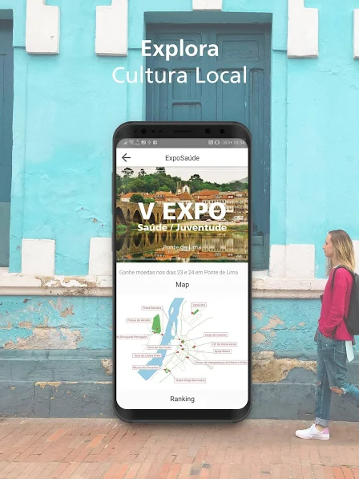
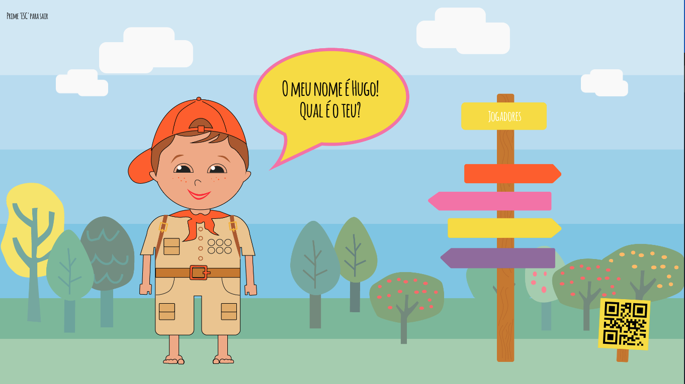
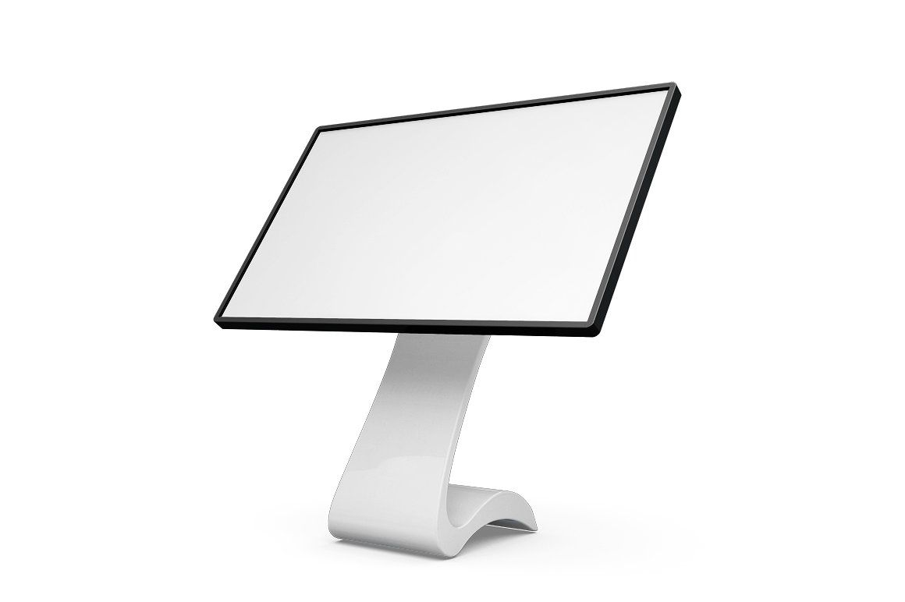
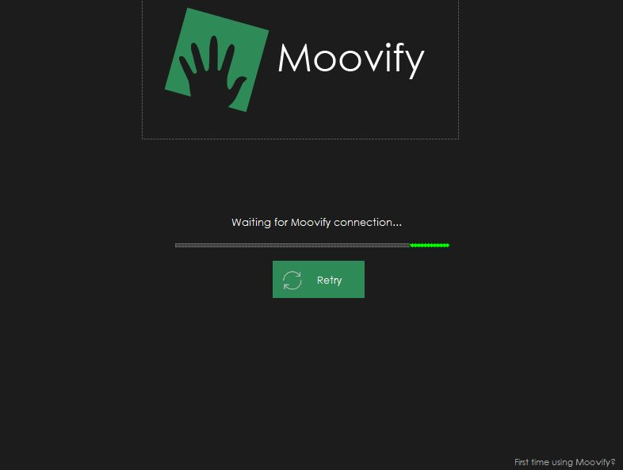

My Projects
Stuff I'm proud of...

garçon? is a pair of mobile apps inspired on
self-service kiosks. With this app, the customers of restaurants,
pharmacies, clothes stores and many others are able to make their
purchases and pay them through the phone or at the store and receive
updates of how their order is going. This way, they can skip the
lines by just going there and taking their products when they're
ready.

noiselesss. is an electron app that collects noise
data in real time and, as long as the noise is below a certain
level, there is an image of an icecream that keeps filling. This app
was used in the canteen of a school in order to motivate kids to do
less noise and they'd get an icecream as a reward. It also has a
back-office full of charts and other cool configurations for the
school directors.
Github

BodyMover GO! is a mobile app that acts as a Social
Network for turism. With the BodyMover app, businesses in a city can
add a QR Code + NFC sign in their establishments and also an ad in
the app. The turists, when they scan a sign get coins depending on
the distance they walked. With those coins, they can get discounts
at the stores, give them to friends, post photos...
See More

Barefoot Games is a mobile app + electron app where
you can play many minigames with your phone. This app is supposed to
advertise an Eco-Park. For example, there is the
Red Light, Green Light multiplayer minigame where you put
your phone in an arm band and control the player by simulating a
running motion. The communication is done through socket.io
See More

Martha is a virtual assistant made to help disabled
kids in a school to make simple tasks. The kids could talk to her
and ask for their timetable, send emails, get the canteen tickets...
Github

Moovify is Windows software for productivity that
connects through a local network to a device that detects motion
and, with it, users can control basic functions like skipping songs,
pausing, playing... One of the most interesting features is the
Moovify Clipboard, where users can take many copies while they're
working, choose them with several movements and then paste them.
Pretty useful!
Github